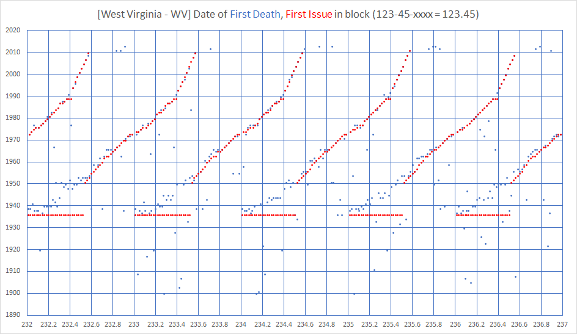
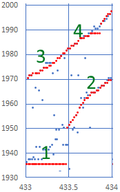

These plots show which SSN numbers were allocated in what years using 2 separate data sources for reference. In these plots the
X-axis is the first 5 digits of the SSN. For example SSN 123-45-xxxx would be found at position
123.45 on the chart. The
Y-Axis is the year. The Death Master Database records the SSN of a person that has died and the date of birth and death, From this the oldest death in a block can be identified and is shown in
BLUE and often helps identify the beginning year a block was assigned. A separate dataset looks at the estimated date a block was first assigned by analyzing the last block issued data. The SSA use to publish the last block issued per state every year, and from this you could determined when a set of blocks was active. These datapoints are in
RED. The block issuance order is as follows per notes at SSA.gov:
Within each area, the group number (middle two (2) digits) range from 01 to 99 but are
not assigned in consecutive order. For administrative reasons, group numbers issued first consist of the ODD numbers from 01 through 09 and then EVEN numbers from 10 through 98, within each area number allocated to a State. After all numbers in group 98 of a particular area have been issued, the EVEN Groups 02 through 08 are used, followed by ODD Groups 11 through 99.
Group numbers are assigned as follows:
ODD - 01, 03, 05, 07, 09------EVEN - 10 to 98
EVEN - 02, 04, 06, 08------ODD - 11 to 99
This means the order of issuance is
01, 03, 05, 07, 09, 10, 10, 12, 14, 16, 18, 20, 22, 24, 26, 28, 30, 32, 34, 36, 38, 40, 42, 44, 46, 48, 50, 52, 54, 56, 58, 60, 62, 64, 66, 68, 70, 72, 74, 76, 78, 80, 82, 84, 86, 88, 90, 92, 94, 96, 98, 02, 04, 06, 08, 11, 13, 15, 17, 19, 21, 23, 25, 27, 29, 31, 33, 35, 37, 39, 41, 43, 45, 47, 49, 51, 53, 55, 57, 59, 61, 63, 65, 67, 69, 71, 73, 75, 77, 79, 81, 83, 85, 87, 89, 91, 93, 95, 97, 99.

Graphically explained in the following example as we look through SSN 433-01-xxxx to 433-99-xxxx from Lousiana:
1. in 1936 we see numbers starting -01 (ODD to 09, and then EVEN 10 on) issued through about -46. No real distinction in the red dataset, but when look at the death data - we see blue dots above. one possible interpretation is that a straight line estimate could be taken from -01 to -48 and fit this from 1936 to 1950 and this may be a better estimate of when these blocks were issued.
2. in 1950, at about -48 we continue the climb but the data is much better distributed by year, so we see a block issued, and then the next start a stair climb up. so from 1950 to 1970 we are very confident of the dates issued. Red Dots are plotted last, so if a blue dot agrees it will be hidden behind.
3. in 1970 we continue with EVEN issue from 02-08. We see an interesting anomaly (studder in the stairstep) around 1988 is probably explained by the switch to 'numeration at birth'. here the death data gives insight that these blocks were probably not all filled at once, but in a more linear fashion over these 3-4 year span.
4. in 1973 we finish the allocation with odd from 11 to 99 ending in around 1997.
Alabama
Alaska
Arizona
Arkansas
California
Colorado
Connecticut
District of Columbia
Delaware
Florida
Georgia
Hawaii
Idaho
Illinois
Indiana
Iowa
Kansas
Kentucky
Louisiana
Maine
Maryland
Massachusetts
Michigan
Minnesota
Mississippi
Missouri
Montana
Nebraska
Nevada
New Hampshire
New Jersey
New Mexico
New York
North Carolina
North Dakota
Ohio
Oklahoma
Oregon
Pennsylvania
Rhode Island
South Carolina
South Dakota
Tennessee
Texas
Utah
Vermont
Virginia
Washington
West Virginia
Wisconsin
Wyoming
Enumeration at Entry
RailRoad Board
Unknown
Virgin Islands
Guam, American Samoa, Philippines
Puerto Rico